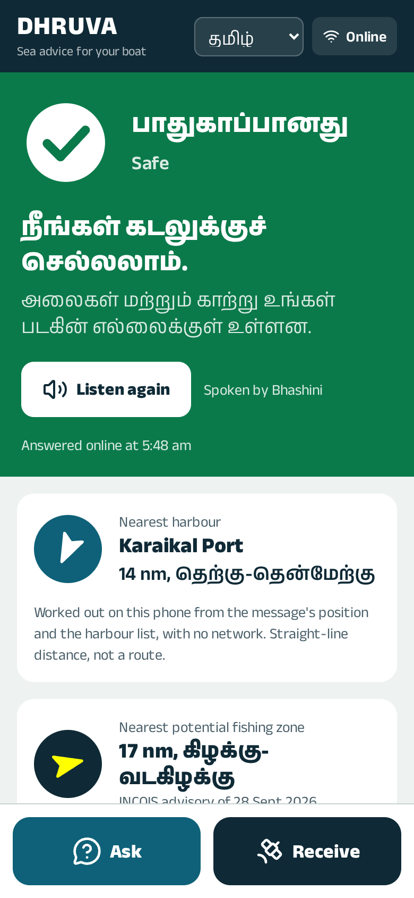
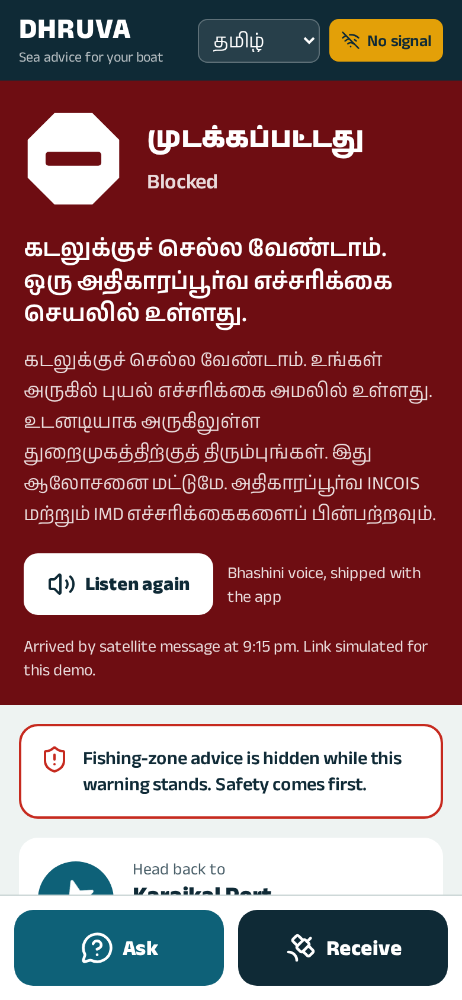
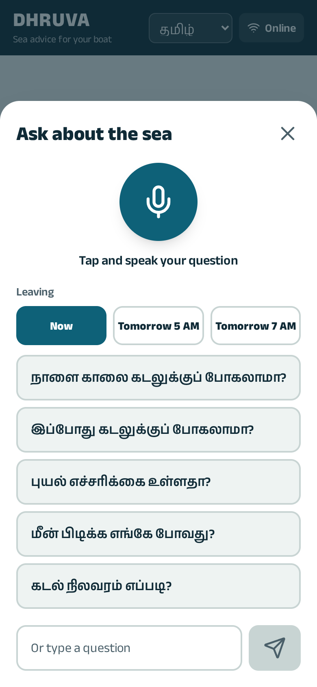
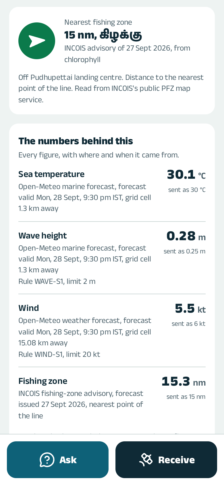
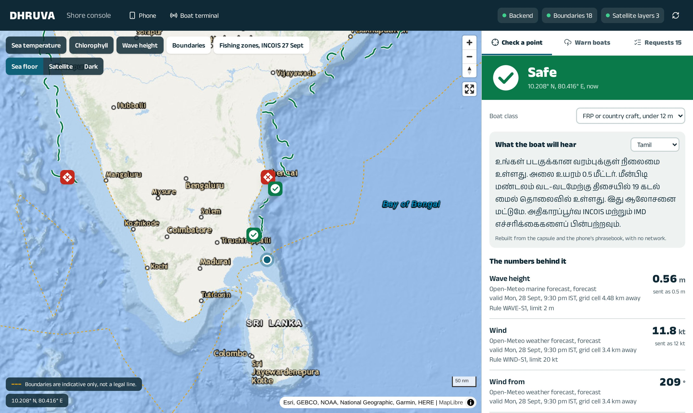
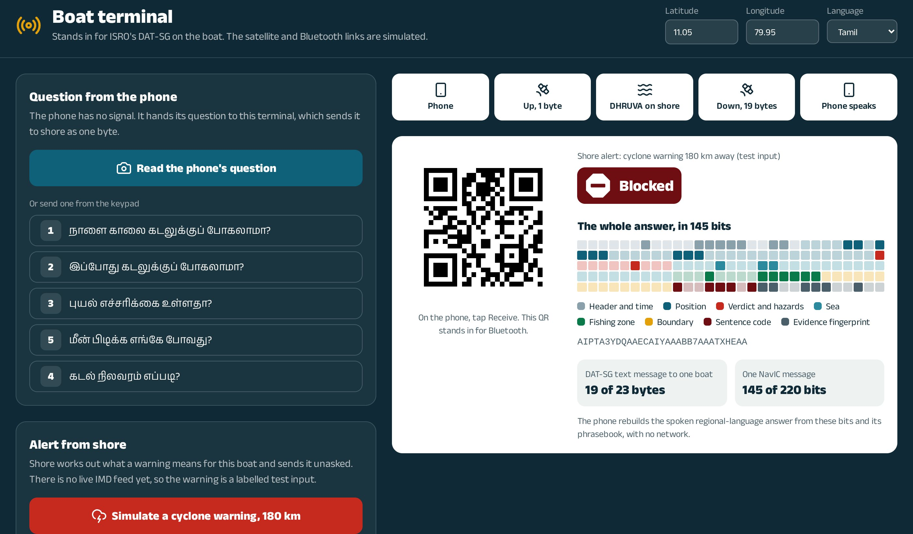
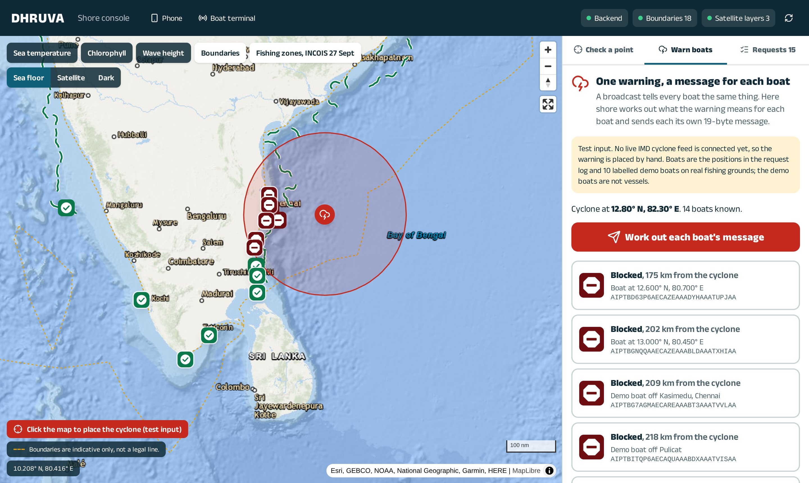
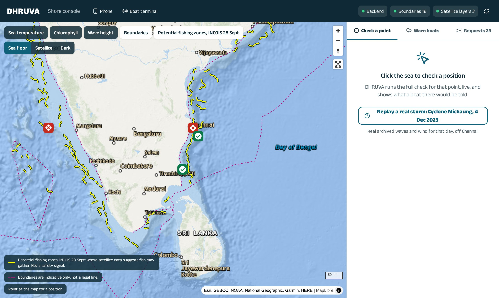

கடலிடம் உங்கள் மொழியில் கேளுங்கள்.


After Cyclone Ockhi in 2017, the lesson was that warnings existed but could not reach boats already at sea. ISRO and INCOIS have since built the channel, and it can even address a single boat. What it carries today is bulletins and broadcasts, written for a stretch of coast.
Warnings and fishing-zone advisories are issued by region and sector. No system we found takes a fisherman's question and answers it.
A boat in the storm's path and a boat far outside it read the same regional bulletin.
Blocked. Do not go to sea: an official warning is active near you. Spoken in Tamil, with the way back to Karaikal Port, 26 km south-south-west, on screen.
Built from that boat's position, its class and the live data, and delivered in one satellite message.
DHRUVA does not replace Nabhmitra, DAT-SG or GEMINI and needs no new hardware. It gives the channel ISRO already runs something worth saying to each boat: a specific, explained, spoken answer.
Sources: ISRO, ICD for DAT-SG emergency messaging via NavIC, v1.2; ISRO at UN ICG-16 (2022); PIB, GEMINI launch (2019); reporting on Cyclone Ockhi by The Wire and The News Minute.
In your own language, by voice. Speak a question in Tamil. Bhashini hears it, DHRUVA's agents check the sea for your boat, and Bhashini speaks the answer back.
Every number traced. A rule engine decides safety, not a language model. Every figure shows where it came from and when, or it is not shown at all.
Still there at sea. The whole answer fits in 145 bits: one DAT-SG message to one boat. The phone rebuilds and speaks it with no network.
Each verdict has its own colour, shape and word, like the signals hoisted at a port. Glare, a cracked screen or colour blindness does not hide it.
A large microphone, one-tap questions and buttons sized for a wet thumb.
Distance and direction to the nearest harbour, worked out on the phone from the message's position.
Choose now, tomorrow at 5 AM or 7 AM. DHRUVA checks that hour's forecast and shows whether the verdict changes.


The nearest line of INCOIS's latest potential-fishing-zone advisory: distance, direction, date and what it was based on. Hidden automatically whenever a hazard is active.
Wave height, wind and sea temperature, each with its source, the hour it is valid for, how far away the grid point is, and the rule it was checked against. When a figure is rounded for the satellite message, the card says so: "0.3 m, sent as 0.25 m".
The problem statement's nine agents, each with one line on what it found. Agents a question did not need are shown greyed out.
Bhashini speaks the answer online. At sea the phone plays Bhashini clips shipped with the app. The screen always says which voice you heard.
Tamil, Malayalam, Odia, Hindi and English in the app, with Bhashini voice in the four Indian languages. The offline phrasebook covers twelve.
Many teams now say that. DHRUVA goes further: the model may not introduce a number at all.
Each reading becomes an evidence row: value, unit, dataset, the grid cell that answered, and when it is valid.
A deterministic rule table sets the verdict per boat class. A cyclone, lightning or tsunami warning forces NO-GO for everyone.
Every number in the answer, including Tamil and Devanagari digits and spelled-out numbers, must match an evidence row.
If the check fails, a plain template built only from the evidence is used instead. An unchecked sentence is never shown.
If waves or wind cannot be fetched, the verdict is No data, with its own shape. A fishing-zone advisory more than three days old is treated as superseded and not offered.
Forecasts are called forecasts. Maritime boundaries are marked indicative, never legal. Safety limits are marked provisional until they are replaced with published INCOIS criteria.

The shore console's point check: the verdict, the sentence the boat will hear, and every number with its source.
A question goes up as one byte. The answer comes down as nineteen. The phone rebuilds the full spoken sentence, in the crew's language, from those bits and a phrasebook it already carries.
characters of one DAT-SG text message to one terminal, framed as ISRO's ICD v1.2 Table 8 lays it out.
hold the whole answer. Every figure sits on a fixed grid, and every scale saturates rather than wrapping.
for the question going up, over Nabhmitra's two-way messaging. DAT-SG cannot carry it: its only uplink is the distress alert.

No team may transmit on ISRO's uplink. In this prototype a boat-terminal screen stands in for DAT-SG, and a QR code stands in for its Bluetooth link to the phone. The bits are identical, and the message format is checkable arithmetic against the published field table.
Shore works out what a cyclone warning means for this boat and sends it, unasked. With no network at all, the phone:
The decoder is pure: no network, no file access, no clock. The Python and TypeScript decoders are tested against the same 500-message corpus.
Bhashini voice clips for every verdict, in Tamil, Malayalam, Odia and Hindi, ship inside the app.
Distance and direction to the nearest harbour, from the message's own position.
A service worker keeps the app, its fonts and its voice clips on the phone, so it opens with the radio off.
Shown: a simulated cyclone warning 180 km away, a labelled test input. DHRUVA has no live IMD cyclone feed yet.
Place a cyclone on the map. DHRUVA runs the full check for every boat it knows and gives each one its own nineteen-byte message: blocked inside 300 km, and the sea's own verdict outside it.

Click the sea to see exactly what a boat there would be told, for any of three boat classes, with the evidence, the agent trace and the message itself.
Cyclone Michaung, 4 Dec 2023, off Chennai: 4.68 m waves and 29.9 kt wind from the archives, and a NO-GO decided from data alone.
The cyclone is a test input, and the demo boats are labelled positions on real fishing grounds, not vessels.

The lines of INCOIS's latest fishing-zone advisory, read from the map service behind its public geoportal, with the date and basis on every line.
Sea temperature, chlorophyll and wave height from Copernicus Marine, served as map tiles.
EEZ and maritime lines from Marine Regions, drawn dashed and labelled indicative, never legal.
Base maps: sea-floor relief (Esri, from GEBCO and NOAA bathymetry), satellite imagery, or dark. No API keys and no quotas.
| Source | What DHRUVA uses it for | Status |
|---|---|---|
| Open-Meteo Marine | Wave height, wave period and sea temperature, by the hour | Live |
| Open-Meteo Forecast and ERA5 archive | Wind speed and direction; the archive replays past dates such as Cyclone Michaung | Live |
| Copernicus Marine | Chlorophyll, currents and the map's satellite layers | Live |
| INCOIS fishing zones | Fishing-zone lines and 1223 landing centres, from the map service behind INCOIS's geoportal. No documented API: read and attributed, with the date on every line | Live |
| Marine Regions (VLIZ) | EEZ, territorial sea and boundary lines, in PostGIS | Loaded |
| Bhashini | Speech recognition, translation and speech in Tamil, Malayalam, Odia and Hindi | Live |
| Gemini | Understands the question and plans which agents run. A keyword planner takes over when it does not answer | Live |
| IMD cyclone warnings | The warning override is built and tested; the feed is not connected yet | Test input |
| DAT-SG link | ISRO's uplink, simulated by a terminal screen and a QR code | Simulated |
| Safety limits | Engineering placeholders until replaced with INCOIS Ocean State Forecast criteria | Provisional |
| Regional wording | Verdict labels machine-translated with Bhashini, pending a native speaker's review | In review |
For demonstrations, DHRUVA can replay recorded live runs if a source is down. A replayed answer always says so on screen, with the time it was recorded.
| Agent | What it does in DHRUVA |
|---|---|
| Planning | Reads the question and decides which agents run, with Gemini |
| Marine data discovery | Finds which datasets can answer, for this place and time |
| Weather intelligence | Wind and waves at the boat's position, for the chosen departure hour |
| Ocean analytics | Sea temperature, chlorophyll and currents |
| Geospatial reasoning | Boundaries, maritime zones and the nearest INCOIS fishing zone, in PostGIS |
| Risk assessment | The deterministic verdict, per boat class, with warning overrides |
| Visualization | Chooses the cards and map layers that answer this question |
| Reporting | The evidence bundle, the number check and the 145-bit message |
| User interaction | The answer in the crew's language, by voice, online and offline |
LangGraph agents on FastAPI and Python 3.12. PostgreSQL with PostGIS. React, TypeScript and MapLibre, with no map tokens. Bhashini for voice and Gemini for planning. The same message decoder in Python and TypeScript, checked against a shared corpus.
TESTS automated tests, including: a fabricated number must fail the check; missing data is never read as safe; a stale fishing zone is never offered; and fishing advice never shows above an active hazard.
ISRO built the channel. DHRUVA gives it something to say to each boat.
Advisory only. Follow official INCOIS and IMD warnings.